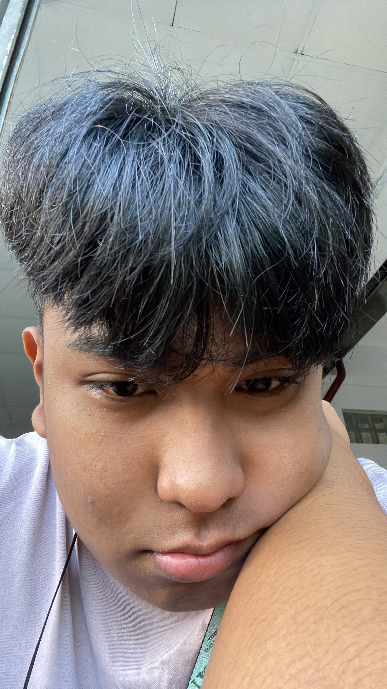

Learning Contract

Introduction
Sup!, My name is Kenneth Joshua A. Ramos. I'm 18 years old and originally from Urdaneta City, Pangasinan. Currently, I reside in T alonzo. My hobbies are listening to music and reading books. My favorite book is "13 Reasons why" because of its life lessons. In music, my favorite artists are Ariana Grande, Olivia Rodrigo, and Lorde. A fact about me is that I did not plan on taking BSIT, but my parents forced me to pursue it. My original course would have been Human Biology at De La Salle University because I plan to become a Neurologist someday. Cheers to those who are currently pursuing their planned courses! Hehe.
Expectations
- I anticipate applying course materials to apply in real world problems.
- I anticipate that the instructor can give us constructive criticism.
- I anticipate that my classmates in this course can carry their own weight.
- I anticipate that I would participate well in this class.
- I anticipate that this class would be fun.
Hindrances
- My fear of failure because I’m afraid to make my parents be disappointed with me.
- Sometimes I am unorganized and that may prevent me from reaching my goals.
- I always feel easily intimidated by someone and that can also prevent me from reaching my goals.
- Lack of self-esteem.
- Time management is also one of my weakness and it can also prevent me from reaching my goals.
Contributions
- Doing my best on the activities that were given.
- Being always attentive in class.
- To cooperate well with my classmates in group activities.
- Always being present in class.
- To always take constructive criticism with a smile.